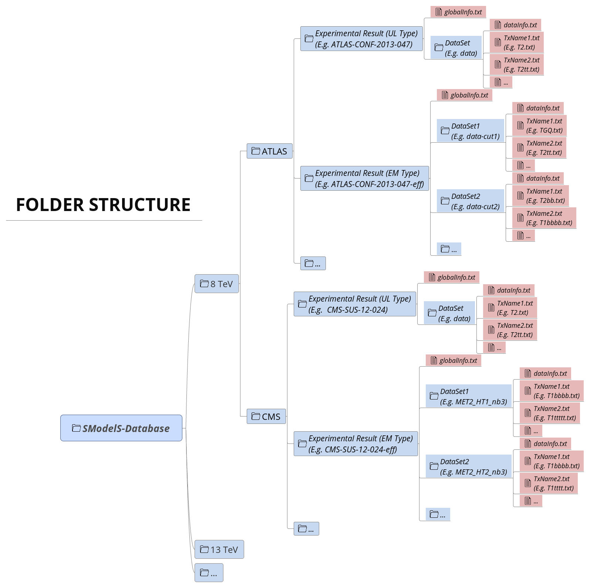
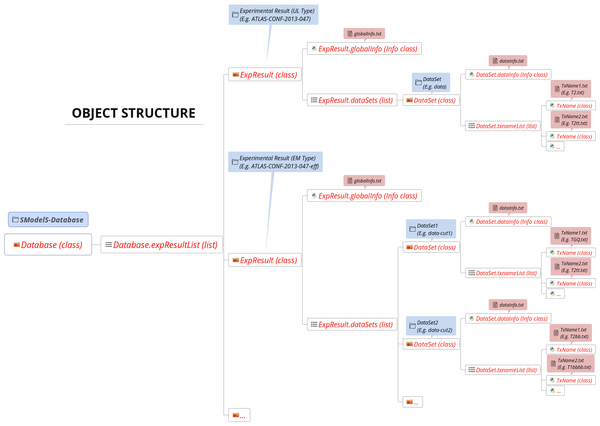

Database of Experimental Results¶
SModelS stores all the information about the experimental results in the Database. Below we describe both the directory and object structure of the Database.
Database: Directory Structure¶
The Database is organized as files in an ordinary (UNIX) directory hierarchy, with a thin python layer serving as the access to the database. The overall structure of the directory hierarchy and its contents is depicted in the scheme below (click to enlarge):
{kind=link}
As seen above, the top level of the SModelS database categorizes the analyses by LHC center-of-mass energies, \(\sqrt{s}\):
- 8 TeV
- 13 TeV
Also, the top level directory contains a file called version with the
version string of the database.
The second level splits the results up between the different experiments:
- 8TeV/CMS/
- 8TeV/ATLAS/
The third level of the directory hierarchy encodes the Experimental Results:
- 8TeV/CMS/CMS-SUS-12-024
- 8TeV/ATLAS/ATLAS-CONF-2013-047
- ...
- The Database folder is described by the Database Class
Experimental Result Folder¶
Each Experimental Result folder contains:
- a folder for each Data Set (e.g.
data-xx) - a
globalInfo.txtfile
The globalInfo.txt file contains the meta information about the Experimental Result.
It defines the center-of-mass energy \(\sqrt{s}\), the integrated luminosity, the id
used to identify the result and additional information about the source of the
data. Here is the content of CMS-SUS-12-024/globalInfo.txt as an example:
sqrts: 8.0*TeV
lumi: 19.4/fb
id: CMS-SUS-12-024
prettyName: \slash{E}_{T}+b
url: https://twiki.cern.ch/twiki/bin/view/CMSPublic/PhysicsResultsSUS12024
arxiv: http://arxiv.org/abs/1305.2390
publication: http://www.sciencedirect.com/science/article/pii/S0370269313005339
contact: Keith Ulmer <keith.ulmer@cern.ch>, Josh Thompson <joshua.thompson@cern.ch>, Alessandro Gaz <alessandro.gaz@cern.ch>
private: False
implementedBy: Wolfgang Waltenberger
lastUpdate: 2015/5/11
- Experimental Result folder is described by the ExpResult Class
- globalInfo files are descrived by the Info Class
Data Set Folder¶
Each Data Set folder (e.g. data-xx) contains:
- the Upper Limit maps for UL-type results or Efficiency maps for EM-type results (
TxName.txtfiles) - a
dataInfo.txtfile containing meta information about the Data Set - Data Set folders are described by the DataSet Class
- TxName files are descrived by the TxName Class
- dataInfo files are descrived by the Info Class
Data Set Folder: Upper Limit Type¶
Since UL-type results have a single dataset (see Data Sets), the info file only holds some trivial information, such as the type of Experimental Result (UL) and the dataset id (None). Here is the content of CMS-SUS-12-024/data/dataInfo.txt as an example:
dataType: upperLimit
dataId: None
For UL-type results, each TxName.txt file contains the UL map for a given element
or sum of elements (see Experimental Results) as well as some meta information,
including the corresponding constraint and the conditions. The
first few lines of CMS-SUS-12-024/data/T1tttt.txt read:
txName: T1tttt
conditionDescription: None
condition: None
constraint: [[['t','t']],[['t','t']]]
checked: A
figureUrl: https://twiki.cern.ch/twiki/pub/CMSPublic/PhysicsResultsSUS12024/T1tttt_exclusions_corrected.pdf
validated: None
axes: 2*Eq(mother,x)_Eq(lsp,y)
publishedData: True
As seen above, the first block of data in the T1tttt.txt file contains
information about the element
(\([[[\mbox{t},\mbox{t}]],[[\mbox{t},\mbox{t}]]]\)) for which the data
refers to as well as reference to the original data source and some additional
information. The second block of data contains the upper limit map as a
function of the BSM masses:
upperLimits: [[[[400.0*GeV, 0.0*GeV], [400.0*GeV, 0.0*GeV]], 1.815773*pb],
[[[400.0*GeV, 25.0*GeV], [400.0*GeV, 25.0*GeV]], 1.806528*pb],
[[[400.0*GeV, 50.0*GeV], [400.0*GeV, 50.0*GeV]], 2.139336*pb],
[[[400.0*GeV, 75.0*GeV], [400.0*GeV, 75.0*GeV]], 2.472143*pb],
[[[400.0*GeV, 100.0*GeV], [400.0*GeV, 100.0*GeV]], 2.92975*pb],
[[[400.0*GeV, 125.0*GeV], [400.0*GeV, 125.0*GeV]], 3.387357*pb],
[[[400.0*GeV, 150.0*GeV], [400.0*GeV, 150.0*GeV]], 3.474572*pb],
[[[400.0*GeV, 175.0*GeV], [400.0*GeV, 175.0*GeV]], 3.561787*pb],
[[[425.0*GeV, 0.0*GeV], [425.0*GeV, 0.0*GeV]], 1.318791*pb],
[[[425.0*GeV, 25.0*GeV], [425.0*GeV, 25.0*GeV]], 1.348072*pb],
...
As we can see, the UL map is given as a python array with the structure: \([[\mbox{masses},\mbox{upper limit}], [\mbox{masses},\mbox{upper limit}],...]\).
Data Set Folder: Efficiency Map Type¶
For EM-type results the dataInfo.txt contains relevant information, such as an id to
identify the Data Set (signal region), the number of observed and expected
background events for the corresponding signal region and the respective signal
upper limits. Here is the content of
CMS-SUS-13-012-eff/3NJet6_1000HT1250_200MHT300/dataInfo.txt as an example:
dataType: efficiencyMap
dataId: 3NJet6_1000HT1250_200MHT300
observedN: 335
expectedBG: 305
bgError: 41
upperLimit: 5.681*fb
expectedUpperLimit: 4.585*fb
For EM-type results, each TxName.txt file contains the efficiency map for a given
element or sum of elements (see Experimental Results) as well as some meta
information.
Here is the first few lines of CMS-SUS-13-012-eff/3NJet6_1000HT1250_200MHT300/T2.txt:
txName: T2
conditionDescription: None
condition: None
constraint: [[['jet']],[['jet']]]
figureUrl: https://twiki.cern.ch/twiki/pub/CMSPublic/PhysicsResultsSUS13012/Fig_7a.pdf
validated: None
axes: 2*Eq(mother,x)_Eq(lsp,y)
publishedData: False
As seen above, the first block of data in the T2.txt file contains
information about the element (\([[[\mbox{jet}]],[[\mbox{jet}]]]\)) for which the
efficiencies refers to as well as reference to the original data source and
some additional information.
The second block of data contains the efficiency map as a function of the BSM masses:
efficiencyMap: [[[[312.5*GeV, 12.5*GeV], [312.5*GeV, 12.5*GeV]], 0.00109159516643],
[[[312.5*GeV, 62.5*GeV], [312.5*GeV, 62.5*GeV]], 0.00118171251453],
[[[312.5*GeV, 112.5*GeV], [312.5*GeV, 112.5*GeV]], 0.00073833631219],
[[[312.5*GeV, 162.5*GeV], [312.5*GeV, 162.5*GeV]], 0.000442121102215],
[[[312.5*GeV, 212.5*GeV], [312.5*GeV, 212.5*GeV]], 0.000321709109432],
[[[312.5*GeV, 262.5*GeV], [312.5*GeV, 262.5*GeV]], 2.38697309434e-05],
...
As we can see the efficiency map is given as a python array with the structure: \([[\mbox{masses},\mbox{efficiency}], [\mbox{masses},\mbox{efficiency}],...]\).
Database: Object Structure¶
The Database folder structure is mapped to python objects in SModelS. The mapping is almost one-to-one, except for a few exceptions. Below we show the overall object structure as well as the folders/files the objects represent (click to enlarge):
{kind=link}
The type of python object (python class, phyton list,...) is shown in brackets. For convenience, below we explicitly list the main database folders/files and the python objects they are mapped to:
- Database folder \(\rightarrow\) Database Class
- Experimental Result folder \(\rightarrow\) ExpResult Class
- Data Set folder \(\rightarrow\) DataSet Class
globalInfo.txtfile \(\rightarrow\) Info ClassdataInfo.txtfile \(\rightarrow\) Info ClassTxname.txtfile \(\rightarrow\) TxName Class
Database: Binary (Pickle) Format¶
Due to the large number of experimental results contained in the SModelS Database, parsing the database folders and building the corresponding database objects may require a non-negligible CPU time. In some cases this task may be the most time consuming task when testing a single input file. Furthermore this procedure does not have to be repeated every time SModelS is run.
In order to avoid these issues, SModelS serializes the database object into a pickle file (<database-path>/database.pcl), which can then be read directly when loading the database. Since reading the pickle file is much faster than parsing the database folders, there is a considerable speed improvement when using the pickle file. If any changes in the database folder structure are detected or the SModelS version has changed, SModelS will automatically re-build the pickle file. This action may take a few minutes, but it is only performed once.
SModelS automatically builds (if necessary) and loads the binary database when a Database object is created. Nonetheless, the user can enforce loading (parsing) the text database using the option force_load = ‘txt’ in Database .
- The pickle file is created by the createBinaryFile method